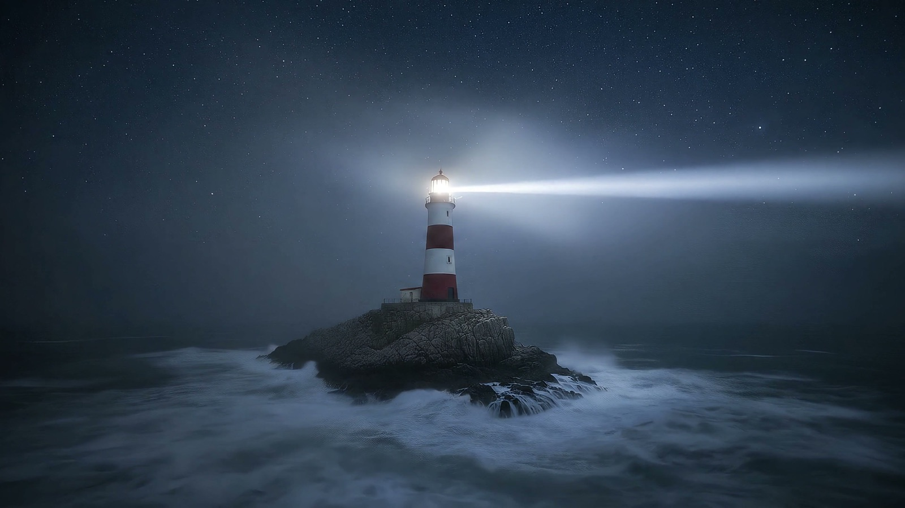

Desktop and Lock Screen
Apply a video once to loop it on your desktop and prepare its matching Lock Screen animation.
Apple silicon · macOS 26+
Choose from 301 GifPaper wallpapers and carry the same scene from your desktop to your Lock Screen.

Apply a video once to loop it on your desktop and prepare its matching Lock Screen animation.
Set the Mac login picture automatically and optionally sync the corresponding Apple Account photo.
Pick a wallpaper, close the chooser, and keep it playing. Turn on Open at Login to resume after sign-in.
The installer is unsigned. macOS may ask for approval when you open it.